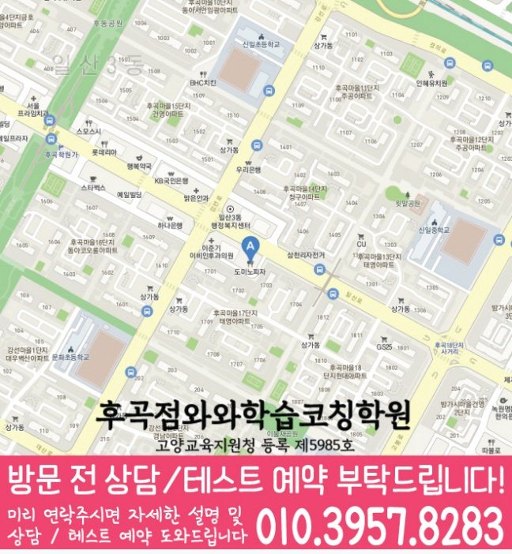

와와학습코칭센터 후곡점
경기 고양시 일산서구 일산로 511 태성상가 2층 201,202
ALL-SUBJECT LEARNING COACHING
와와학습코칭센터 후곡점의 위치와 과목별 가능 학년을 확인하고, 학습코칭 상담에 필요한 학교·학습 자료를 준비해 보세요.
와와학습코칭센터 후곡점의 과목별 가능 학년을 아래에서 확인하세요. 과목마다 안내 학년이 다르며 현재 반 편성·시간표·정원은 상담에서 확인할 수 있습니다.
경기 고양시 일산서구 일산로 511 태성상가 2층 201,202
현재 반 편성과 시간표는 상담에서 확인
현재 반 편성과 시간표는 상담에서 확인
현재 반 편성과 시간표는 상담에서 확인
현재 반 편성과 시간표는 상담에서 확인
현재 반 편성과 시간표는 상담에서 확인
고양교육지원청 등록 제5985호
통합 상담 전화 010-6839-8283 · 문의할 때 와와학습코칭센터 후곡점과 학생의 학년을 말씀해 주세요.
교습비 자료의 과목·수업 시간·횟수와 별도 비용을 상담 내용과 함께 확인해 주세요.
아래는 가정에서 학습 상태를 정리하는 방법입니다. 실제 수업 구성과 학교별 진도는 센터 상담에서 확인해 주세요.
최근 일주일 동안 계획한 공부와 실제 마친 공부를 비교해 보세요. 과목별로 막힌 부분, 미룬 과제와 질문하지 못한 문제를 나누어 적으면 상담에서 우선순위를 정하기 쉽습니다.
수학은 풀이 과정, 영어는 어휘·문장 이해, 다른 과목은 개념 설명과 자료 해석에서 어려운 부분을 표시해 보세요. 과목별 가능 학년을 확인한 뒤 필요한 수업을 문의합니다.
목표 분량, 실행 날짜와 다시 볼 문제를 짧게 기록해 보세요. 상담에서는 과제 피드백 방식, 질문 방법과 학부모에게 전달되는 내용을 구체적으로 물어볼 수 있습니다.
학교 참고 목록은 고양신일초등학교, 신촌초등학교, 일산초등학교, 한뫼초등학교, 신일중학교, 일산중학교, 현산중학교, 신일비즈니스고등학교, 일산고등학교입니다. 학교별 전용 반 개설 여부는 별도로 확인해 주세요. 재학 학교와 학년을 알려 주고 학교 시험 범위표, 교과서와 수업 프린트를 바탕으로 상담할 수 있습니다.
와와학습코칭센터 후곡점의 과목별 가능 학년을 아래에서 확인하세요. 과목마다 안내 학년이 다르며 현재 반 편성·시간표·정원은 상담에서 확인할 수 있습니다.
학교 참고 목록은 고양신일초등학교, 신촌초등학교, 일산초등학교, 한뫼초등학교, 신일중학교, 일산중학교, 현산중학교, 신일비즈니스고등학교, 일산고등학교입니다. 학교별 전용 반 개설 여부는 별도로 확인해 주세요. 재학 학교와 학년을 알려 주고 학교 시험 범위표, 교과서와 수업 프린트를 바탕으로 상담할 수 있습니다.
과목별 사용 교재와 최근 일주일 학습 기록를 준비해 보세요. 학생이 혼자 해결한 부분과 도움이 필요했던 부분을 표시하고, 희망하는 수업 요일·시간도 함께 정리하면 좋습니다.
센터의 교습비 자료와 상담에서 과목·횟수·수업 시간을 대조해 주세요. 교재비 등 별도 비용, 결석 시 보강 기준과 과제 피드백 방식도 함께 확인하면 좋습니다.
다음은 상담 준비를 돕기 위한 가상 상황입니다.
미룬 과제와 혼자 해결하기 어려웠던 부분을 최근 학습 자료에 표시하고, 무엇을 먼저 연습하면 좋을지 질문하는 상황을 생각해 볼 수 있습니다.
일주일의 학교 일정과 집에서 공부할 수 있는 시간을 적어 봅니다. 상담에서는 시작할 분량과 다음 점검일을 어떻게 정할지 질문해 보세요.


와와학습코칭센터 후곡점 기준으로 일산동 학생의 상담 범위를 확인합니다. 실제 방문·상담 전에는 주소와 이동 동선을 함께 확인해 주세요.